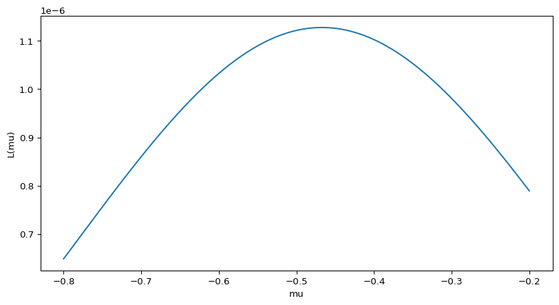

10wk-2: 최대가능도추정 (1) (Python, 참고자료)
2025-11-06
강의영상
- 본 강의노트로는 강의를 하지 않음.
의문: 가능도라는 건 그냥 말장난 아닌가?
일견 그렇게 보일 수 있는 이유
- Fisher의 1922년 논문은 개념적으로 단순해 보임
- 확률과 가능도의 구분이 수식적으로는 동일해 보임
- 단지 관점의 차이로만 보일 수 있음
하지만 이는 중요한 패러다임의 전환이다
- 수학적 엄밀성: 가능도는 관측된 데이터를 고정하고 모수 공간에서의 함수로 취급함으로써, 추정 문제를 최적화 문제로 명확히 정식화
- 일관된 추론 체계: 최대가능도추정(MLE)은 큰 표본에서 일치성(consistency), 점근적 정규성(asymptotic normality), 효율성(efficiency) 등의 바람직한 통계적 성질을 갖춘다
- 실용적 유용성: 복잡한 모형(회귀분석, GLM, 시계열, 생존분석 등)에서 일관되게 적용 가능한 추정 원리를 제공
- 현대 통계학의 기초: 가능도 원리는 베이지안 추론, 정보이론, 모형선택(AIC, BIC) 등 현대 통계학의 핵심 개념들의 토대가 됨
단순히 “말장난”이 아니라, 통계적 추론을 위한 강력하고 범용적인 수학적 프레임워크를 제공한 것이 Fisher의 공헌이다.
최대가능도 추정
# 예제1
앞면이 확률이 \(\theta\)인 동전을 10번 던져서 아래와 같이 나왔다고 하자.
- data: 0, 1, 0, 0, 1, 1, 1, 0, 1, 0
이때 가능도함수는 아래와 같이 정의된다.
\[L(\theta|data) = \mathbb{P}(data|\theta)\]
- 만약에 \(\theta=0.1\) 이었다면 가능도는 \(L(\theta|data) = 0.9^5 \times 0.1^5\) 이다.
- 만약에 \(\theta=\star\) 이었다면 가능도는 \(L(\theta|data) = (1-\star)^5 \times \star^5\)와 같이 계산될 것이다.
따라서 가능도함수 \(L(\theta)=L(\theta|data)\)는 아래와 일반화 할 수 있다.
\[L(\theta) = (1-\theta)^5 \theta^5\]
몇개의 점에서 가능도함수값을 계산하면 아래와 같다.
| \(\theta\) | 0.1 | 0.2 | 0.3 | 0.4 | 0.5 | 0.6 | 0.7 | 0.8 | 0.9 |
|---|---|---|---|---|---|---|---|---|---|
| \(L(\theta)\) | 0.0001 | 0.0003 | 0.0010 | 0.0082 | 0.0098 | 0.0082 | 0.0010 | 0.0003 | 0.0001 |
- (\(\theta=0.1\) vs \(\theta=0.2\)): 어떠한 사람의 주장이 더 그럴듯하게 들리는가?
- (\(\theta=0.2\) vs \(\theta=0.5\)): 어떠한 사람의 주장이 더 그럴듯하게 들리는가?
- \(\theta=0.5\) 라고 주장하는 사람을 이길 수 있는 사람이 있을까?
더 많은 가능도함수 값을 조사하여 그림을 그려보자.

그림1: 예제1의 \(L(\theta)\)를 나타내는 산점도. 육안으로 파악하였을 경우는 대충 \(\theta=0.5\) 근처에서 최대값을 가지는 것 처럼 보인다.
결론: 동전을 던져서 결과가 아래와 같이 나왔다면
- data = (0, 1, 0, 0, 1, 1, 1, 0, 1, 0)
동전을 던져서 앞면이 나올 확률은 \(\theta=0.5\)라고 추정할 수 있다. 왜냐하면 가능도함수 \(L(\theta)\)가 \(\theta\)에서 최대값을 가지니까. 따라서 이 문제의 경우 \(\theta\)에 대한 추정치는 \(\hat{\theta}=0.5\)라고 볼 수 있다.
#
# 정의 – 모수에 대한 추정치는 모수 그 자체 (흔히 \(\theta\)로 표기하는)와 구분짓기 위해서 \(\hat{\theta}\) 같은 기호로 사용한다. 즉
\[\hat{\theta} = 0.5 \Leftrightarrow \text{``$\theta=0.5$로 추정''}\]
이다.
의문
이 예제를 다 살펴보면 사실 이런 의문이 들죠.. 어차피 \[\bar{x}=\frac{0+1+0+0+1+1+1+0+1+0}{10}=0.5\]니까 당연히 \(\theta=0.5\)라고 주장해야 하는것 아니냐고..
# 예제2
앞면이 나올 확률이 \(\theta\)인 동전을 7번 던져서 아래와 같이 나왔다고 하자.
- data: 0, 1, 0, 0, 1, 1, 1
이 경우는 동전을 던져서 앞면이 나올 확률 \(\theta\)를 어떻게 추정하는게 맞을까?
(풀이)
그림2: 예제2의 \(L(\theta)\)를 나타내는 산점도. 육안으로 파악하였을 경우는 대충 \(\theta=0.6\) 근처에서 최대값을 가지는 것 처럼 보인다.
최대값을 엄밀하게 조사하기 위해서 아래를 구해보자.
likelihood는 여기에서 길이가 100인 벡터이고 (칸이 100개 있는 array), 100개의 값 중에서 최대값은 0.00839276이다. 그리고 최대값은 100칸중 57번째 칸에 위치하여 있다.
그런데 사실 likelihood는 아래와 같은 theta에 대응하여 구해진 숫자이다.
array([0.01, 0.02, 0.03, 0.04, 0.05, 0.06, 0.07, 0.08, 0.09, 0.1 , 0.11,
0.12, 0.13, 0.14, 0.15, 0.16, 0.17, 0.18, 0.19, 0.2 , 0.21, 0.22,
0.23, 0.24, 0.25, 0.26, 0.27, 0.28, 0.29, 0.3 , 0.31, 0.32, 0.33,
0.34, 0.35, 0.36, 0.37, 0.38, 0.39, 0.4 , 0.41, 0.42, 0.43, 0.44,
0.45, 0.46, 0.47, 0.48, 0.49, 0.5 , 0.51, 0.52, 0.53, 0.54, 0.55,
0.56, 0.57, 0.58, 0.59, 0.6 , 0.61, 0.62, 0.63, 0.64, 0.65, 0.66,
0.67, 0.68, 0.69, 0.7 , 0.71, 0.72, 0.73, 0.74, 0.75, 0.76, 0.77,
0.78, 0.79, 0.8 , 0.81, 0.82, 0.83, 0.84, 0.85, 0.86, 0.87, 0.88,
0.89, 0.9 , 0.91, 0.92, 0.93, 0.94, 0.95, 0.96, 0.97, 0.98, 0.99,
1. ])따라서 theta=0.57에서 likelihood가 최대화된다고 볼 수 있다. 이 숫자는 우리가 가지는 직관적인 숫자
와 비슷하다.
#
# 예제3
정규분포에서 아래와 같은 데이터를 관측하였다고 하자.
array([-1.48056759, 1.57716947, -0.95674448, -0.92000525, -1.9976421 ,
-0.27229604, -0.31534871, -0.62825524, -0.10646388, 0.4280148 ])정규분포의 평균과 분산을 추정하라.
(풀이)
정규분포의 pdf는 아래와 같다.
\[f(x) = \frac{1}{\sigma\sqrt{2\pi}} e^{-\frac{(x-\mu)^2}{2\sigma^2}}\]
가능도함수는 아래와 같이 정의된다. \[L(\theta|data) = f(data|\theta)\]
여기에서 \(\theta = \mu,\sigma^2\) 이므로 가능도함수는 아래와 같이 된다.
\[L(\mu,\sigma^2|data) = f(data|\mu,\sigma^2)\]
\(data = (-1.4805676, \dots, 0.4280148)\) 에 대하여 정리하면 아래와 같다.
\[L(\mu,\sigma^2)=\frac{1}{\sigma\sqrt{2\pi}} e^{-\frac{(-1.4805676-\mu)^2}{2\sigma^2}}\times\dots\times\frac{1}{\sigma\sqrt{2\pi}} e^{-\frac{(0.4280148-\mu)^2}{2\sigma^2}}\]
\((\mu, \sigma^2)=(0,1)\)에 대한 가능도함수값은 아래와 같이 계산할 수 있다.
몇개의 \(\mu\)와 몇개의 \(\sigma^2\) 에 대한 가능도값을 구하면 아래와 같다.
| \(\sigma^2=0.8\) | \(\sigma^2=0.9\) | \(\sigma^2=1.0\) | \(\sigma^2=1.1\) | \(\sigma^2=1.2\) | |
|---|---|---|---|---|---|
| \(\mu=-0.7\) | 8.0e-07 | 8.6e-07 | 8.6e-07 | 8.2e-07 | 7.7e-07 |
| \(\mu=-0.6\) | 1.0e-06 | 1.0e-06 | 1.0e-06 | 9.7e-07 | 8.9e-07 |
| \(\mu=-0.5\) | 1.1e-06 | 1.2e-06 | 1.1e-06 | 1.0e-06 | 9.6e-07 |
| \(\mu=-0.4\) | 1.1e-06 | 1.1e-06 | 1.1e-06 | 1.0e-06 | 9.4e-07 |
| \(\mu=-0.3\) | 9.4e-07 | 9.9e-07 | 9.8e-07 | 9.3e-07 | 8.5e-07 |
| \(\mu=-0.2\) | 7.1e-07 | 7.8e-07 | 7.9e-07 | 7.6e-07 | 7.1e-07 |
| \(\mu=-0.1\) | 4.8e-07 | 5.5e-07 | 5.7e-07 | 5.7e-07 | 5.5e-07 |
| \(\mu=0.0\) | 2.9e-07 | 3.4e-07 | 3.8e-07 | 3.9e-07 | 3.9e-07 |
| \(\mu=0.1\) | 1.5e-07 | 1.9e-07 | 2.3e-07 | 2.4e-07 | 2.5e-07 |
대략적으로 \(\sigma^2=0.9\) \(\mu=-0.5\) 근처에서 최대값을 가지는 듯 하다.
이를 그림으로 그려보자.
최대가능도 추정값: μ = -0.47, σ² = 0.91
그림3: 예제3의 가능도함수 \(L(\mu, \sigma^2)\)의 곡면
역시 표로 얻은 직관과 비슷하다. 따라서 \(\mu\)와 \(\sigma^2\)을 대략적으로 \(-0.5\), \(0.9\)로 추정하는 것이 바람직해보인다. 이는 우리의 직관과 대략적으로 일치한다.
# 예제4
분산이 1인 정규분포에서 아래와 같은 데이터를 관측하였다고 하자.
array([-1.48056759, 1.57716947, -0.95674448, -0.92000525, -1.9976421 ,
-0.27229604, -0.31534871, -0.62825524, -0.10646388, 0.4280148 ])정규분포의 평균을 추정하라.
(풀이)
정규분포의 pdf는 아래와 같다.
\[f(x) = \frac{1}{\sigma\sqrt{2\pi}} e^{-\frac{(x-\mu)^2}{2\sigma^2}}\]
가능도함수는 아래와 같이 정의된다.
\[L(\theta|data) = f(data|\theta)\]
여기에서 \(\theta\)는 정규분포의 모평균으로 생각해야 한다. (원래는 \(\theta=(\mu,\sigma^2)\)이고 \(L(\theta|data)\)는 원래 \(\mu\)와 \(\sigma\) 모두에 영향받는 함수이겠지만, 이 문제에서는 \(\sigma=1\)으로 고정되었으므로 \(L(\theta)\)역시 \(\mu\)에만 영향받는 함수가 된다.) 따라서 아래와 같이 쓸 수 있다.
\[L(\mu|data) = f(data|\mu)\]
정리하면 아래와 같다.
\[L(\mu)=\frac{1}{\sqrt{2\pi}} e^{-\frac{(-1.4805676-\mu)^2}{2}}\times\dots\times\frac{1}{\sqrt{2\pi}} e^{-\frac{(0.4280148-\mu)^2}{2}}\]
그래프를 그리면 아래와 같다.
그림4: 예제4의 \(L(\mu)\)를 나타내는 곡선. \(\mu=-0.5\)와 \(\mu=-0.4\) 사이에서 최대값이 있는듯하다.
대략적으로 \(\mu\)는 -0.4xx 와 같은 값으로 추정하면 맞을것 같다. 그리고 이는 우리의 직관과 일치한다.